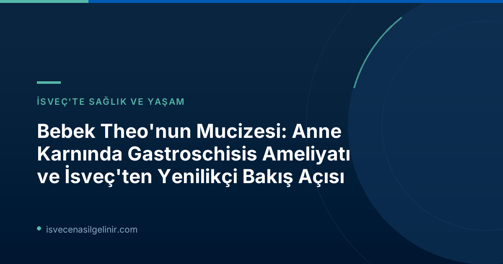

Bebek Theo'nun Mucizevi Doğuşu: Anne Karnında Gastroschisis Ameliyatı Detayları
İngiliz Maisie Savage'ın hamileliği sırasında, bebeğinde gastroschisis adı verilen nadir bir bağırsak anormalliği tespit edildi. Bu durum, bağırsakların karın duvarındaki bir açıklıktan vücut dışına geliştiği doğuştan gelen bir bozukluktur. Tıp alanındaki son yenilikleri kullanarak, gebeliğin 26. haftasında, bebek Theo henüz anne karnındayken Teksas Çocuk Hastanesi'nde (Texas Children's Hospital) çığır açıcı bir operasyon geçirdi.
Gastroschisis Nedir?
Gastroschisis, yeni doğanlarda yaklaşık her 4000 doğumda bir görülen, karın duvarındaki bir kusur nedeniyle bağırsakların veya diğer karın organlarının bebeğin vücudunun dışına çıkması durumudur. Genellikle doğumdan sonra ameliyatla düzeltilir ancak ciddi vakalarda çoklu ameliyatlar ve uzun hastane yatışları gerekebilir.
Ameliyat Süreci ve Şaşırtıcı Sonuçlar
Profesör Paolo de Coppi ve ekibi tarafından gerçekleştirilen bu operasyonda, küçük cerrahi aletler kullanılarak Theo'nun bağırsakları karın boşluğuna geri yerleştirildi. Bu türden üçüncü başarılı operasyon olan bu girişim sayesinde Theo, doğduktan sadece dört gün sonra hastaneden taburcu edilebildi. Profesör de Coppi, BBC'ye yaptığı açıklamada, "Bu, ailelerin yeni doğmuş çocuklarıyla doğumdan kısa bir süre sonra eve dönebilmeleri için muazzam bir fark yaratıyor" dedi. Geleneksel yöntemlerle doğum sonrası çeşitli ameliyatlar ve aylarca süren hastane yatışları gerekebileceği düşünüldüğünde, bu erken müdahalenin aileler üzerindeki etkisi paha biçilmez.
Fetal Cerrahide Yeni Ufuklar: Rahim "Cerrahi İnovasyon İçin Yeni Bir Alan"
Bu başarı, tıp dünyasında uzun süredir konuşulan fetal cerrahinin geleceği hakkında heyecan verici tartışmaları beraberinde getiriyor. Michael Belfort liderliğindeki ve araştırmacıların şiddetli gastroschis'i doğum öncesinde onarmayı amaçladığı klinik çalışmanın bir parçası olarak gerçekleştirilen operasyonlar, rahimin cerrahi inovasyon için yeni bir potansiyel alan haline geldiğini gösteriyor.
Belfort, gelecekte rahim içinde kalp ve akciğer ameliyatlarının bile yapılabilmesinin mümkün olabileceğini belirtiyor. Bu tür gelişmeler, doğumsal anomalilerle doğan bebeklerin yaşam kalitesini ve hayatta kalma şansını önemli ölçüde artırma potansiyeli taşıyor. Türkiye'de ve dünyada bu tarz ileri seviye sağlık hizmetlerine erişim, İsveç Vatandaşlık Sınavı gibi birçok alanda olduğu gibi, araştırma ve bilgiye dayanmaktadır.
İsveç'ten Uzman Görüşü: "İsveç İçin Uygulanabilir Değil"
Bu yenilikçi yaklaşıma rağmen, İsveç'teki uzmanlar temkinli bir duruş sergiliyor. Karolinska Üniversite Hastanesi Fetal Tıp Merkezi Direktörü Peter Conner, araştırmayı memnuniyetle karşılarken, fetal cerrahinin hem anne hem de gebelik için ciddi riskler içerdiğini vurguluyor. Conner'a göre, hangi fetüslerin komplikasyonlu bir seyir izleyeceğini erken tespit etmek mümkün olmadığından, birçok bebeğin ve annenin tedaviye gerçekten ihtiyacı olmadan risklere maruz kalması söz konusu olabilir.
İsveç'te Gastroschisis Tedavisinde Mevcut Durum (Karolinska)
| Parametre | Değer |
|---|---|
| Yıllık Doğum Sayısı | Yaklaşık 6 çocuk |
| Sağkalım Oranı | %95'in üzerinde |
| Komplikasyonsuz Seyir Oranı | %90'ın üzerinde |
| Ortalama Hastane Yatış Süresi | Genellikle 4 haftanın altında |
Conner, "Riskleri göz önünde bulundurulduğunda bu kesinlikle mantıksız olurdu" diyor. Aynı zamanda, bu yeni yöntemlerin diğer durumlar için faydalı olabileceği potansiyelini de kabul ediyor. İsveç'te gastroschisis ile doğan çocuklara uygulanan geleneksel tedavinin zaten mükemmel sonuçlar verdiğini belirtiyor. Doğum sonrası yapılan ameliyatlarla sağkalım oranı %95'in üzerinde ve vakaların %90'ından fazlası sorunsuz bir şekilde ilerliyor. Hastanede kalış süresi ise genellikle dört haftanın altında, bu da daha önce komplike vakalarda görülen sürelere kıyasla önemli ölçüde kısa.
Gastroschisis Tedavisinde Küresel Bakış ve Gelecek
Bebek Theo'nun hikayesi, tıp biliminin sınırlarını zorlama ve bebeklerin yaşam kalitesini iyileştirme çabalarını gözler önüne seriyor. ABD'de gerçekleştirilen bu pilot çalışmalar, fetal cerrahi alanında umut vadeden bir geleceğin habercisi olsa da, her ülkenin kendi sağlık sistemi, etik kurulları ve mevcut tedavi protokolleri doğrultusunda bu tür yenilikçi yöntemleri değerlendirmesi gerekiyor.
İsveç'in mevcut tedavi başarıları, riskli fetal ameliyatlara şimdilik temkinli yaklaşmasının nedenini açıklıyor. Ancak dünya genelindeki bilimsel ilerlemeler, tıp dünyasının adaptasyon ve sürekli gelişim içinde olduğunu gösteriyor. Bu gelişmeler, her yeni doğan bebeğin sağlıklı bir yaşama adım atabilmesi için büyük bir umut kaynağı olmaya devam edecek.
Referanslar:
- SVT Nyheter Inrikes: Bebis opererades inne i mammans mage: ”Enorm skillnad”
- sverigemedborgarskapsprov.com
İsveç'te Sağlık ve Göçmenlik Süreçleri Hakkında Daha Fazla Bilgi Edinin
İsveç'e göç etmeyi veya İsveç'te sağlık hizmetleri hakkında bilgi almayı mı düşünüyorsunuz? Kapsamlı rehberlerimiz ve uzman danışmanlık hizmetlerimizle tüm sorularınıza cevap bulun.